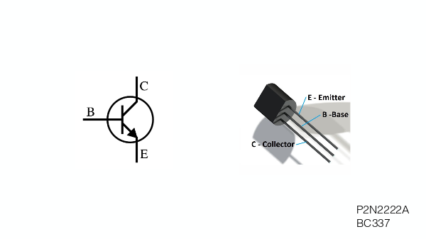
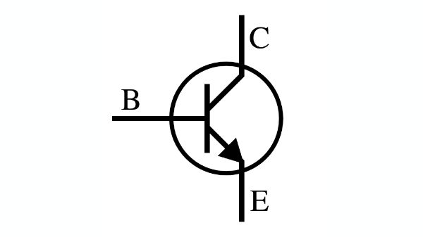

0. stupid pet trick
1. the greatest invention
of the 20th century
silicon transistor
2. electromagnetism
creating voltage by moving a polarized metal through conductive wires
faraday's law
3. two features
transistors as switches
transistors as amplifiers
4. historically
transistors can forward information independent of voltage
5. anatomy - I

control voltage
6. anatomy - II

7. back to dc motors
8. features of a motor
speed (RPM)
torque (N*m)
speed can be affected by voltage, but not torque
9. stepper motors
stepper motors use the same principle, but with nooks
10. high voltage
because transistors deal with higher voltage, you can hurt things!
that's why we use diodes
11. diodes
12. wire up a dc motor

green = red in real life
yellow = black in real life
13. assignment
make a project using dc motors and a diode